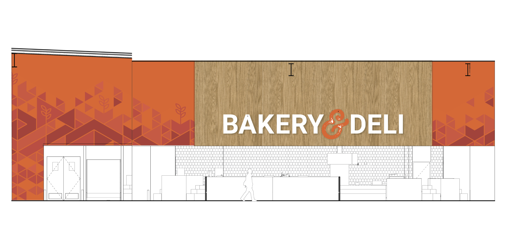
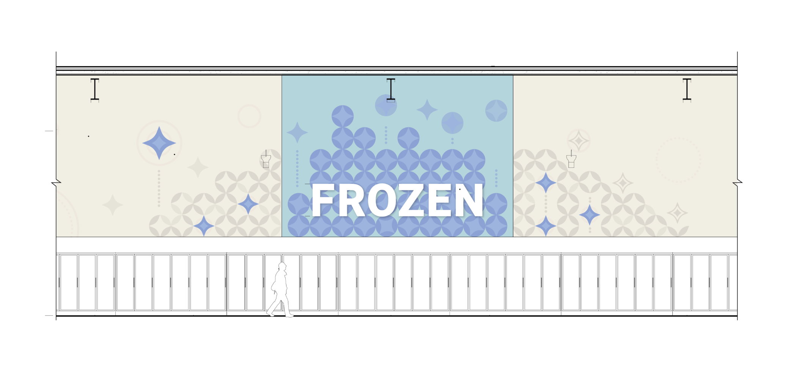
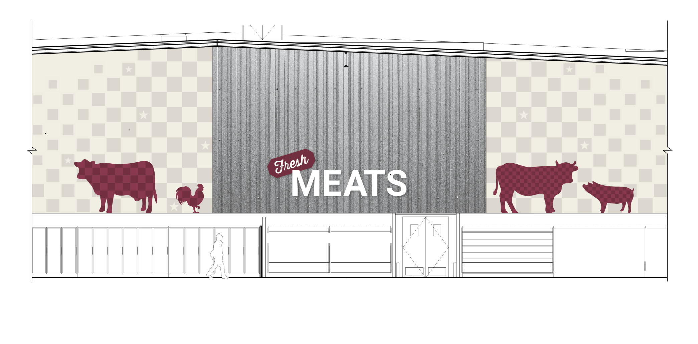
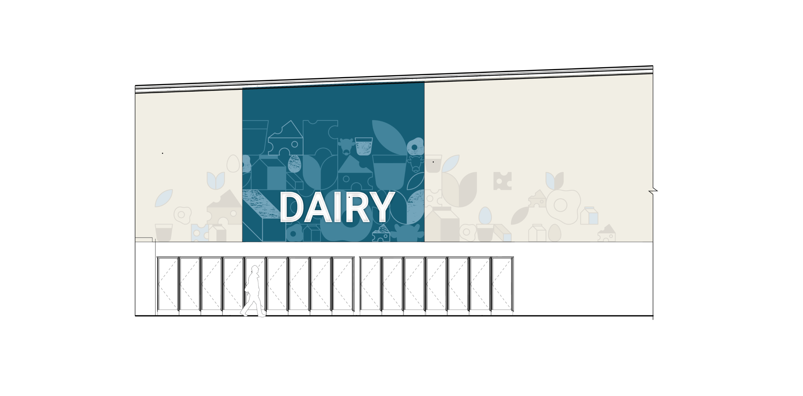
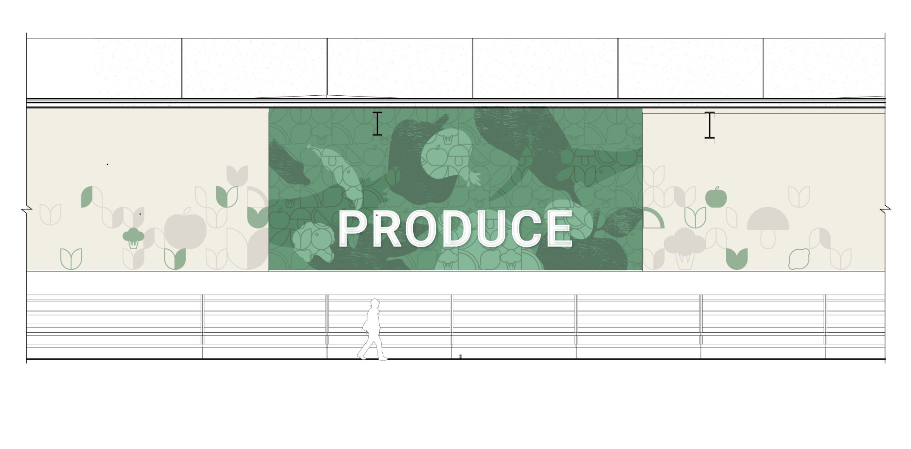
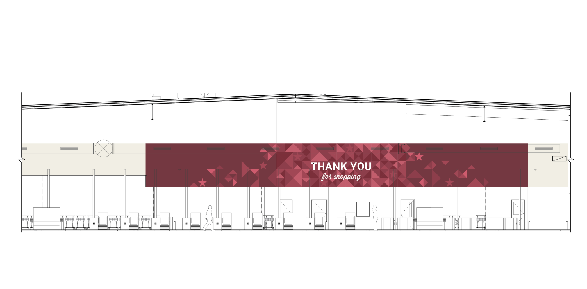
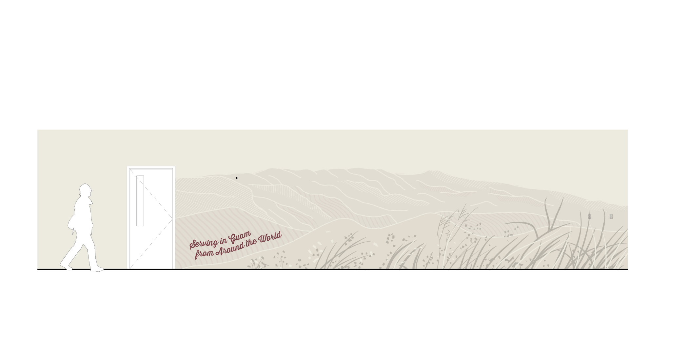

Food Department Graphics and Banners
For a Grocery Store
About
While at GHD Partners, my team worked with a grocery store to develop signage and graphics. In my role as designer, I worked on illustrating department wall graphics and hanging banners.
custom illustrated department banners







elevations for department grahpics
Thanks for looking!
scroll to top
Bonnie is a UX/UI & Visual Designer based in New York City. She has 6+ years of agency experience working with a range of clients, including Google, Amazon, Netflix, Sesame Workshop, and Barbershop Books. Her portfolio consists of work across various domains: service design and participatory design research within city government; social-impact project focused web and brand design; and signage & wayfinding for large-scale workplaces.
Her design practice is rooted in producing thoughtful, functional, and systems-oriented work. Her work often involves creating design solutions that translate complex ideas into visually engaging, informative, and accessible experiences.
Her educational background is in Human Centered Design & Engineering at the University of Washington. Studying at the intersection of user research, design, and computer science ultimately informs her strategic, data-driven, and multidisciplinary approach to design problems.
In her free time, she enjoys cooking 🥘, tidying 🧹, rearranging furniture 🛋️ playing volleyball 🏐, and riding her bike over potholes 🚲🕳️.
💻 To view work, please visit on a desktop 🙂